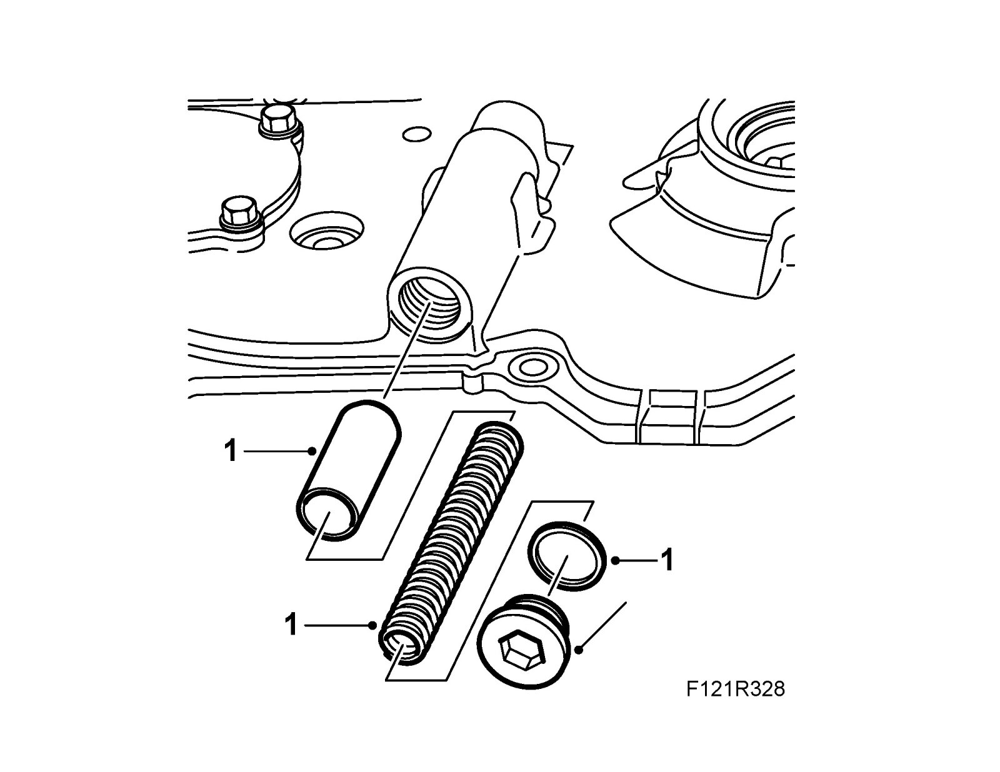

Oil Pressure Regulator Valve: Service and Repair
Oil pressure valveTo remove
1. Remove the right-hand Drive shaft
2. Remove the oil pressure valve. Maintain a grip when unscrewing the plug so that it does not fall away.
3. Remove the spring and the piston.
To fit
1. Fit the oil pressure valve with the piston and the spring. Replace the gasket.

2. Fit the right-hand Drive shaft.
Tightening torque 40 Nm (29 lbf ft)